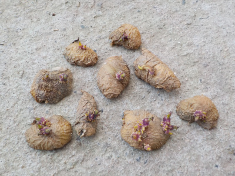
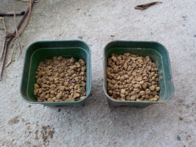
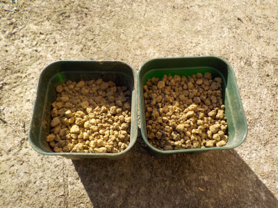
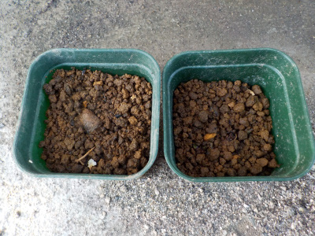
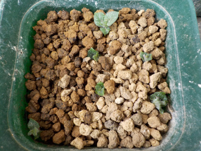
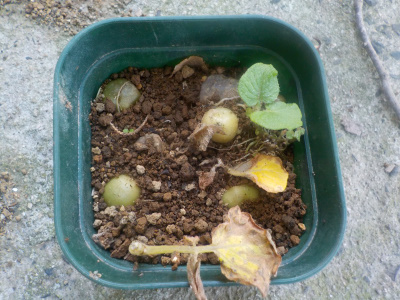
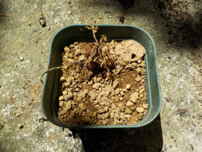

更新日 : 2023/01/29

芽が出たジャガイモは芽を取り除いて食べるんですが、芽を捨てないで土に植えてみることにしました。
じゃがいもの種芋って、芋が育って収獲した時にも残ってたりしますよね。なので芋が育つのに、芋の栄養分ってあんまりいらないんじゃないかと思います。
芽とちょっとの量の芋があれば成長して芋が収獲出来るんじゃないかと思ったので試してみます。

カビが生えるかもしれないので、ちょっと乾燥させてシワシワになった皮を1つのポットに4つとか5つ入れて水をやりました。
にょきにょきっと芽が出るといいな。
更新日 : 2023/02/05

前回植えたものはまだ何の変化も見えません。
ちゃんと育つか分かりませんが、更に2つ追加しました。
更新日 : 2023/03/19

じゃがいのの皮からジャガイモを育てようとしましたが、芽が育ちませんでした。
水やりの回数が少なかったので、乾燥し過ぎで枯れたと思います。
更新日 : 2023/04/15

枯れたと思っていたじゃがいもの皮ですが、小さな芽が出ました。
皮だけでイモの養分が少ない分、成長が遅かったのかもしれないです。
今このサイズの芽を育てて、夏までに収獲出来るかは謎ですね。
更新日 : 2023/06/04

成長が遅いのでほったらかしにしていたジャガイモの皮栽培です。
気温が上昇して苗が枯れた後に、ミニじゃがいもが出来ていました。
小さい苗でもちゃんと小さいですけどジャガイモが出来るんですね。この緑のジャガイモは食べれないし、小さいので種芋にも出来ないな。
更新日 : 2023/08/05

日差しの弱い涼しい場所だったら大丈夫かなと思ったんですが、ダメでした。
無理でしたか。
ジャガイモの皮からジャガイモは出来るけど、栄養が少ないので大きくならない可能性が高い。
【おいしいものを食べよう。】【たくさん寝よう。】
【ソロ活をしよう!】【季節感のあることをしよう。】【動画視聴はほどほどに。】【当サイトの全てのコンテンツは無断転載禁止です。】